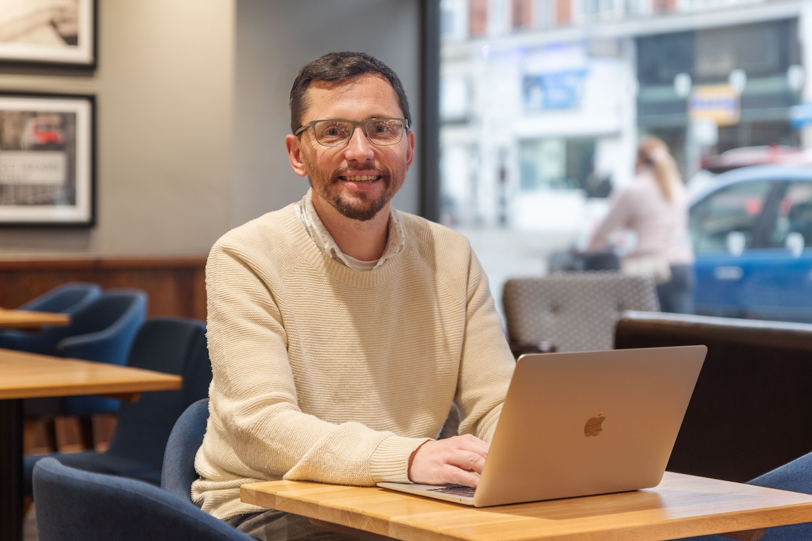

Welcome to my site
I'm Lee, and I specialise in making complex information spaces easier to navigate and understand. My expertise spans content strategy, information architecture, and user research.

My projects
I've transformed content and information architecture, developed a cross-channel content strategy and new content types, and improved the usability of forms and systems.
Connecting news users with content types to meet business goals
News publishers at a university wanted their news items to get more visits. So I firstly discovered their ultimate goals, then set out to find how news content might help to achieve these.
I mapped the subject domain to find University objects users would find it helpful to discover, and obtained data on their journeys involving news.
Read how I decided the content types to connect news with.Developing a new information architecture to transform a service
My user research into people's journeys into the care system informed a new site structure and new and replacement content.
The navigation corresponded to stages in people's journeys and the needs I'd discovered they felt at each stage. Stakeholders accepted my proposals to reduce over 250 pages to a few dozen and to developing content through pair-writing.
Read how I decided the new site structure.Defining business services and designing content to launch a venture
I developed a new website section for business venture Southampton Geospatial.
I facilitated workshops to identify potential users and services that might help them. This informed my work to define and prioritise service offerings, communicated in clear, accessible language and patterns that I won the business's support for.
Read how I defined what the venture offered.Re-designing and testing a form to publish for a Government department
I re-designed a Government web content request form.
I discovered what was important for service providers and users, tested the revised form's usability, iterated and re-tested. The result: the removal of pain points for the service users, and better data for the service providers.
Read how I improved the process for users and the organisation.